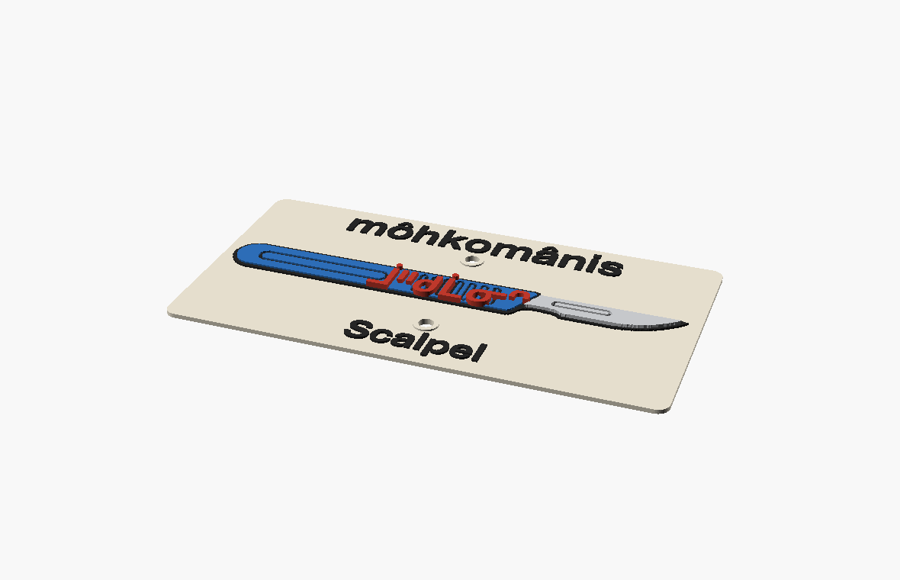

"little knife — 'knife' (môhkomân) shrunk by the diminutive -is to name the surgeon's small, precise blade."

3D render of the multi-colour printed sign — surgeon's scalpel icon, the syllabics ᒨᐦᑯᒫᓂᐢ, transliteration, and the English name.
Scalpel is one of a cluster of blade-named trails the local builders cut into the Keillor hillside, and it earns its name by contrast. Right above it runs Machete — black diamond, loose, steep, named in Cree mistâpiskihkomân 'the great iron knife.' Scalpel is the small, precise sibling: Trailforks rates it blue, a moderate climbing line (avg grade ~4.7%) that picks its way through the trees instead of hacking straight down them. Machete clears the brush; the scalpel does the fine work. The plaque art leans into the surgical reading — a single fine blade — and into the old 'going under the knife' wink.
The Cree is built from two pieces. môhkomân is the ordinary word for 'knife.' Add the diminutive -is and you get môhkomânis — literally 'little knife,' the everyday Cree word for a pocket-knife or jackknife, here stretched to cover the surgeon's scalpel. There's a nice resonance hiding in the root: môhkomân also lives inside kihci-môhkomân 'Big Knife' — the old Cree name for an American (the 'Long Knives'). So the scale built into this trail's name, little knife against big knife, is the same scale Cree has long used to size up the world.
The surgical joke runs deeper than the builders may have known. The whole Keillor network is named for Dr. Frederick A. Keillor (1883–1971) — a WWI medical officer, Edmonton's city coroner, and an alderman — who bought this stretch of river-valley bottomland in 1918 and farmed it. A surgeon's blade named on a doctor's old farm is almost too neat. It also opens the door to the Cree word for a healer, maskihkîwiyiniw ('medicine person'), whose omôhkomânis 'little knife' is a blade that mends rather than harms — see the candidates on the right.
Like every trail on this wall, Scalpel sits on ᓀᐦᐃᔭᐤ ᐊᐢᑭᕀ Nêhiyaw-Askiy — Plains Cree territory, Treaty 6, and a homeland of the Métis Nation. Edmonton's mountain-bike community has begun carving Cree names onto Trailforks itself (the nearby nôsemanicôs 'Ladybug' is one), and these plaques are part of putting nêhiyawêwin back on the land it was always spoken on.
Blue, moderate singletrack in the Keillor network of NW Edmonton — about 478 m of climbing line (~23 m gain, avg grade ~4.7%) threading the trees just below black-diamond Machete. Tap through to Trailforks for maps, conditions, and rider reports.
Explore the trail on Trailforks, with a local preview from the uploaded GPX.
★ On the plaque. The cleanest match: 'little knife.' Sits in direct contrast with neighbouring Machete (mistâpiskihkomân, 'great iron knife') — small precise blade vs. big rough one.
Built from the 'cut' verb rather than the 'knife' noun: 'little cutting tool.' A quieter sibling to Machete's kîskatahikan family — surgical precision over brute force.
The full surgeon image: 'the medicine-person's little knife' — a blade that heals, not harms. Fits the trail's home on Dr. Keillor's old farm, but it's a mouthful for a sign.
| English | SRO | Syllabics |
|---|---|---|
| little knife / pocket-knife (the plaque) | môhkomânis | ᒨᐦᑯᒫᓂᐢ |
| knife (the bare noun) | môhkomân | ᒨᐦᑯᒫᐣ |
| machete / 'great iron knife' (next-door trail) | mistâpiskihkomân | ᒥᐢᑖᐱᐢᑭᐦᑯᒫᐣ |
| American / 'Big Knife' (the Long Knives) | kihci-môhkomân | ᑭᐦᒋ ᒨᐦᑯᒫᐣ |
| little cutter / slicer | kîskahikanis | ᑮᐢᑲᐦᐃᑲᓂᐢ |
| the healer's little knife (surgeon's blade) | maskihkîwiyiniw omôhkomânis | ᒪᐢᑭᐦᑮᐏᔨᓂᐤ ᐅᒨᐦᑯᒫᓂᐢ |
SRO uses ê î ô â. Syllabics match the SRO shown.
Dialectal preferences may affect minor spelling choices; check local norms for signage.
References: itwêwina, Online Cree Dictionary, Plains Cree Dictionary
Each sign is 3D printed in Edmonton. Want one for your own trail, cabin or wall? Email hello@nehiyomtb.ca.